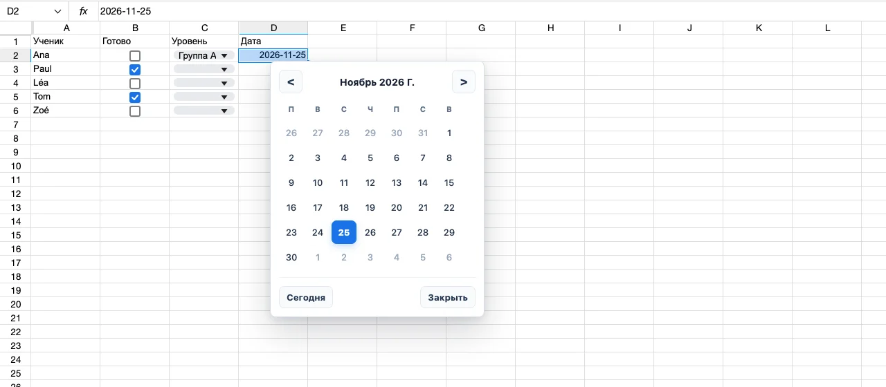

Флажки, списки и календарь

Флажки
Выделите ячейки, Вставка › Флажок. Щелчок ставит или снимает флажок; значение ячейки — TRUE или FALSE.
=ЕСЛИ(B2; "сделано"; "сделать")
=СУММПРОИЗВ(B2:B6; C2:C6)
=СУММПРОИЗВ(B2:B6; B2:B6)Вторая формула складывает значения столбца C с отмеченным флажком; третья считает отмеченные флажки.
Раскрывающиеся списки
Выделите ячейки, Вставка › Раскрывающийся список….
| Источник | Содержание |
|---|---|
| Значения | варианты, по одному в поле; Добавить вариант; без запятых |
| Из диапазона | диапазон, ячейки которого — варианты: Лист2!$A$1:$A$10 |
Диапазон без $ сдвигается от ячейки к ячейке, как заполненная формула. Если его ячейки меняются, варианты следуют за ними.
В ячейке видна стрелка; щелчок открывает варианты. Значение не из списка не принимается.
Календарь
Двойной щелчок по ячейке с датой открывает календарь: выберите день, меняйте месяц кнопками < и >, Сегодня — сегодняшняя дата. Он открывается в любой ячейке с форматом даты, даже пустой, если в ней нет формулы и она не заблокирована.
Для столбца дат, который заполняют календарём: выделите его и задайте формат Дата.
Удаление
Delete убирает из ячейки флажок или список вместе со значением.
Флажки и списки сохраняются в файле Excel; флажки там — флажки Excel.